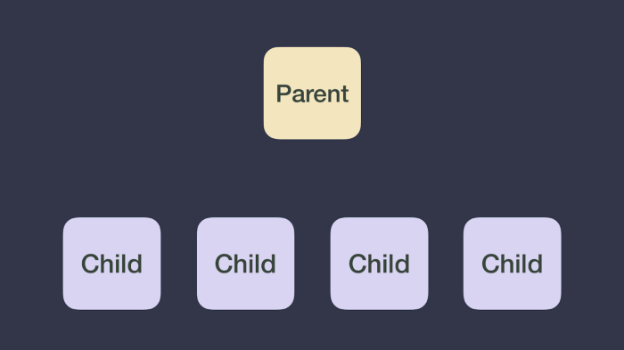
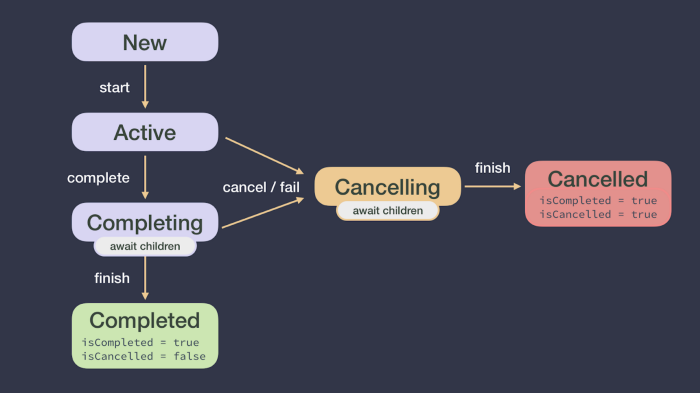
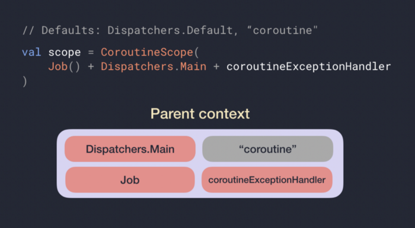
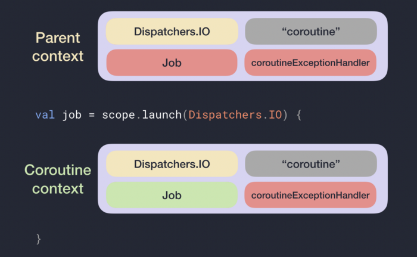

Coroutines - First things first
Learn about the most basics coroutines concepts
This series of blog posts goes in-depth into cancellation and exceptions in Coroutines. Cancellation is important for avoiding doing more work than needed which can waste memory and battery life; proper exception handling is key to a great user experience. As the foundation for the other 2 parts of the series (part 2: cancellation, part 3: exceptions), it’s important to define some core coroutine concepts such as CoroutineScope, Job and CoroutineContext so that we all are on the same page.
If you prefer video, check out this talk from KotlinConf’19 by Florina Muntenescu and I:
CoroutineScope
A CoroutineScope keeps track of any coroutine you create using launch or async (these are extension functions on CoroutineScope). The ongoing work (running coroutines) can be canceled by calling scope.cancel() at any point in time.
You should create a CoroutineScope whenever you want to start and control the lifecycle of coroutines in a particular layer of your app. In some platforms like Android, there are KTX libraries that already provide a CoroutineScope in certain lifecycle classes such as viewModelScope and lifecycleScope.
When creating a CoroutineScope it takes a CoroutineContext as a parameter to its constructor. You can create a new scope & coroutine with the following code:
// Job and Dispatcher are combined into a CoroutineContext which
// will be discussed shortly
val scope = CoroutineScope(Job() + Dispatchers.Main)
val job = scope.launch {
// new coroutine
}
Job
A Job is a handle to a coroutine. For every coroutine that you create (by launch or async), it returns a Job instance that uniquely identifies the coroutine and manages its lifecycle. As we saw above, you can also pass a Job to a CoroutineScope to keep a handle on its lifecycle.
CoroutineContext
The CoroutineContext is a set of elements that define the behavior of a coroutine. It’s made of:
-
Job— controls the lifecycle of the coroutine. -
CoroutineDispatcher— dispatches work to the appropriate thread. -
CoroutineName— name of the coroutine, useful for debugging. -
CoroutineExceptionHandler— handles uncaught exceptions, will be covered in Part 3 of the series.
What’s the CoroutineContext of a new coroutine? We already know that a new instance of Job will be created, allowing us to control its lifecycle. The rest of the elements will be inherited from the CoroutineContext of its parent (either another coroutine or the CoroutineScope where it was created).
Since a CoroutineScope can create coroutines and you can create more coroutines inside a coroutine, an implicit task hierarchy is created. In the following code snippet, apart from creating a new coroutine using the CoroutineScope, see how you can create more coroutines inside a coroutine:
val scope = CoroutineScope(Job() + Dispatchers.Main)
val job = scope.launch {
// New coroutine that has CoroutineScope as a parent
val result = async {
// New coroutine that has the coroutine started by
// launch as a parent
}.await()
}
The root of that hierarchy is usually the CoroutineScope. We could visualise that hierarchy as follows:
 Coroutines are executed in a task hierarchy. The parent can be either a CoroutineScope or another coroutine
Job lifecycle
A Job can go through a set of states: New, Active, Completing, Completed, Cancelling and Cancelled. While we don’t have access to the states themselves, we can access properties of a Job: isActive, isCancelled and isCompleted.
 Job lifecycle
If the coroutine is in an active state, the failure of the coroutine or calling job.cancel() will move the job in the Cancelling state (isActive = false, isCancelled = true). Once all children have completed their work the coroutine will go in the Cancelled state and isCompleted = true.
Parent CoroutineContext explained
In the task hierarchy, each coroutine has a parent that can be either a CoroutineScope or another coroutine. However, the resulting parent CoroutineContext of a coroutine can be different from the CoroutineContext of the parent since it’s calculated based on this formula:
Parent context = Defaults + inherited
CoroutineContext+ arguments
Where:
-
Some elements have default values:
Dispatchers.Defaultis the default ofCoroutineDispatcherand“coroutine”the default ofCoroutineName. -
The inherited
CoroutineContextis theCoroutineContextof theCoroutineScopeor coroutine that created it. -
Arguments passed in the coroutine builder will take precedence over those elements in the inherited context.
Note: CoroutineContexts can be combined using the + operator. As the CoroutineContext is a set of elements, a new CoroutineContext will be created with the elements on the right side of the plus overriding those on the left. E.g. (Dispatchers.Main, “name”) + (Dispatchers.IO) = (Dispatchers.IO, “name”)
 Every coroutine started by this CoroutineScope will have at least those elements in the CoroutineContext. CoroutineName is gray because it comes from the default values.
Now that we know what’s the parent CoroutineContext of a new coroutine, its actual CoroutineContext will be:
New coroutine context = parent context +
Job()
If with the CoroutineScope shown in the image above we create a new coroutine like this:
val job = scope.launch(Dispatchers.IO) {
// new coroutine
}
What’s the parent CoroutineContext of that coroutine and its actual CoroutineContext? See the solution in the image below!
 The Job in the CoroutineContext and in the parent context will never be the same instance as a new coroutine always get a new instance of a Job
The resulting parent CoroutineContext has Dispatchers.IO instead of the scope’s CoroutineDispatcher since it was overridden by the argument of the coroutine builder. Also, check that the Job in the parent CoroutineContext is the instance of the scope’s Job (red color), and a new instance of Job (green color) has been assigned to the actual CoroutineContext of the new coroutine.
As we will see in Part 3 of the series, a CoroutineScope can have a different implementation of Job called SupervisorJob in its CoroutineContext that changes how the CoroutineScope deals with exceptions. Therefore, a new coroutine created with that scope can have SupervisorJob as a parent Job. However, when the parent of a coroutine is another coroutine, the parent Job will always be of type Job.
Now that you know the basics of coroutines, start learning more about cancellation and exceptions in coroutines with part 2 for cancellation, part 3 for exceptions, and part 4 for work that shouldn’t be cancelled.